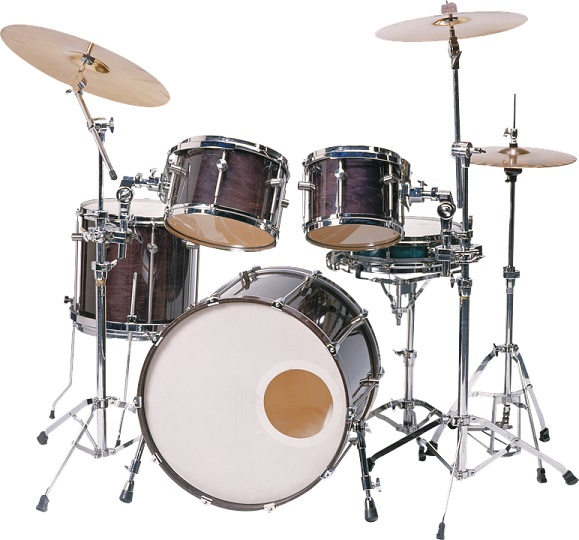
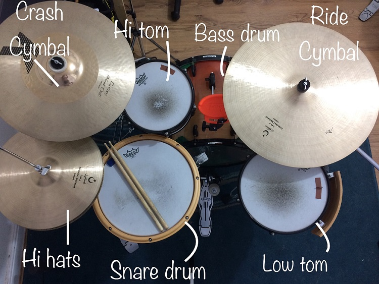

Taste The Music
No.Boundary.For.Your.Soul
A Guide to Buying a Drum Kit
Buying the right drum kit is an essential first step in your life as a drummer. After all, if you enjoy how your drum kit sounds, you're far more likely to practice. Many factors need to be considered when you choose a drum kit, and making this decision can be a daunting task. This article will help you understand a lot of the terminology used by drum manufacturers, the drum kit market, and which drum kit is right for you.
ANATOMY
BRANDS
There are a plethora of high quality drum manufacturers all over the world. Below is a list of some highly respected global brands:
- Pearl
- Yamaha
- Tama
- Gretsch
- Drum Workshop
- Sonor
- Mapex
- Ludwig
- Premier
Many smaller brands also make great products. If you're unsure of a particular brand, check online for reviews.
MATERIAL
Drums are usually made from wood, although some manufacturers use plastic for their shells. The type and quality of wood used is a good indication as to the quality of the drum kit. Here are some common woods and how they sound:
- Maple - perhaps the most sought-after wood in drum manufacturing. It's versatile with a warm, bright sound. It sounds great on smaller drums as it produces warm, singing high/mid tones.
- Birch - the typical "studio" drum kit. Birch has a darker, less vibrant tone compared to maple and has a natural EQ which makes it suitable for studio work.
- Mahogany - enhances low end sounds so it is great for bigger drums such as bass drums and low toms.
- Oak - not a common wood in drum manufacturing but used by Yamaha in its Oak Custom line. These drums are incredibly loud and suitable for live performances with little or no amplification.
- Walnut - again not common but used by Tama in its Star Walnut kits. Similar to birch, it has a natural EQ but has a fundamentally lower tone.
- Poplar (bass wood) - a cheap alternative to maple. Most beginner kits are made from this wood.
- Bubinga - many drum manufacturers use more exotic woods such as bubinga as an outer ply for its stunning physical appearance. While this doesn't affect the sound too much, it enhances the look of the drum.
However, the wood used is not a definitive indicator of a drum’s quality. There are high and low quality grades of all woods, and you may see two kits made of the same type of wood at completely different prices. This may be due to the wood quality and features on the rest of the drum.
SHELL THICKNESS
Besides the material, the shell thickness plays a pivotal role in the overall tone of the drum. Thicker shells are louder and dryer than thin shells, which have a more “vintage,” warm sound.
FINAL THOUGHTS
With the internet being so accessible, it's now easier than ever to access videos or soundfiles before you buy your drum kit. But also remember that you can completely transform the way a drum kit sounds by altering the tuning. I hasten to add that any drum kit, no matter how expensive, can sound bad with poor drum heads and bad tuning. Likewise, a cheap drum kit can sound brilliant with good quality heads and proper tuning.